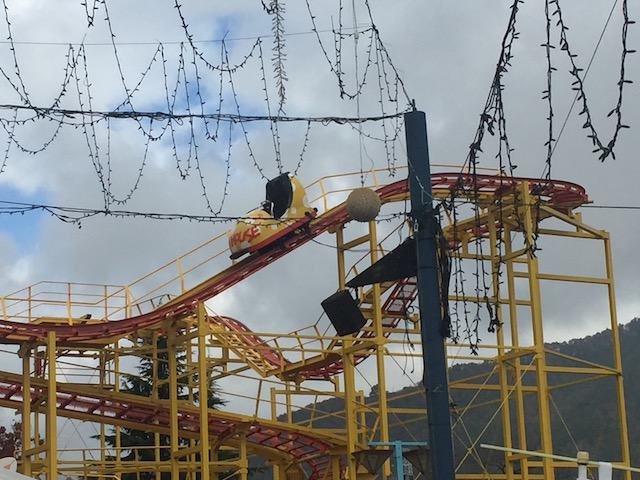
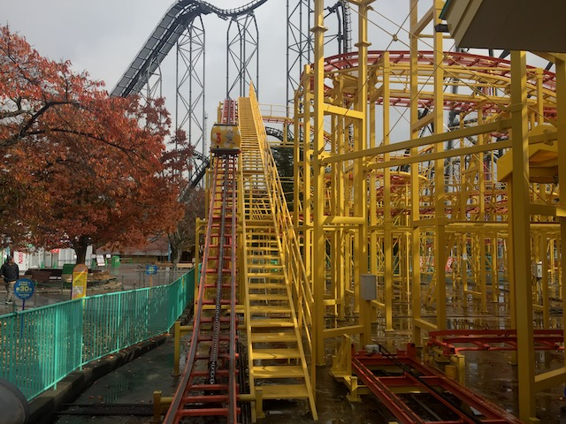
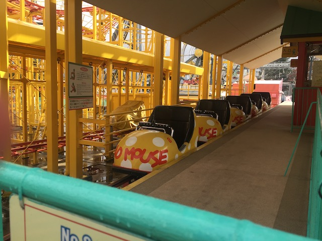
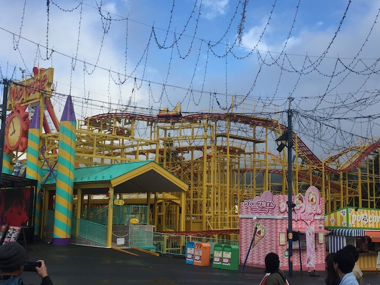

| |

Mad Mouse Review

For this review, we're going to have to travel back in time to my visit to Fuji-Q Highlands to review their now defunct Wild Mouse coaster. Now if you looked at this thing, this thing looked strange. And I don't mean that in a good way. This thing looked like something you would build on RCT if you had never seen a Wild Mouse in your life and just thought you'd derp around and build a Wild Mouse in your park. That's pretty much what Mad Mouse at Fuji-Q was like. It was....an odd ride. It wasn't terrible or anything. It was semi-fun. OK, it was far worse than your average Wild Mouse, but I still had fun on it. But anyways, I'm still surprised that I wound up getting this credit. Why? Simple. The cars. This ride had cars that only housed 2 people per car! God damn it Fuji-Q! Wild Mouse coasters are already low capacity! And you go and freaking cut that in half by only having two people per car! Between your rapids ride and this coaster, this is like the ultimate proof that you don't care about capcity (then again, this coaster is now demolished. Though I'm guessing the low capacity was not a reason for its death). Anyways, we got in the low capacity cars, pulled down the lap bar, and away we went! We rolled around a turn and went up the lifthill, getting a nice view of the ride we were about to ride, as well as Eejanaika. Eventually, we reached the top, and turned before we went down a small drop. Fun. We then rose up and went around another tight curve. This lead us to another small drop and another hill. We sure this was a Wild Mouse? Well don't worry. Because after that, this ride proved that it was a Wild Mouse. In the most awkward way possible. After that hill, we rise up and head into a big series of super tight curves. There's no real direction they're going. It's just random tight curves and zig zagging in F*CK IT DIRECTION!!! This is why I called it a Wild Mouse made by a child who just got RCT and never saw a Wild Mouse in their life. This is the kind of sh*t they would build! Eventually, we finished that tight curve zig-zagging, go down a little dip that feels more like a pothole on the track, before going around another Wild Mouse curve, except now it actually felt like a Wild Mouse. Go down a small dip, rise back up, go through another Wild Mouse turn. And then, we went into a sort of....helix!? What the f*ck sort of Wild Mouse was this!!? But yeah. We went down that and into another set of wild mouse switchbacks. Yeah. These things were agressive, and....awkward. After some mean laterals, we then went down a gradual drop, went around a turn. Go through some straight....OOF!!! Forgot about the pothole in the track. Or was that supposed to be a tiny drop. It's hard to tell the difference. We went around a turn, and through a couple more bumps. Eh...kind of awkward. SLAM around a harsh turn, and back into the station. So that was Mad Mouse at Fuji-Q. And....it was weird. I didn't hate this Wild Mouse as much as other enthusiasts did. It may have been agressive at times, but it never hurt. It just felt....awkward, poorly designed, and weird. And of course, the terrible capacity produced TERRIBLE LINES!!! I'm happy I was able to ride it and get the credit simply cause I'm a credit whore. But if I didn't get lucky with it opening up right in front of us and us beating the crowds, we never rode it and then it got demolished, I wouldn't have lost any sleep. Don't feel bad if you missed it. It wasn't a good coaster. Hoping that this coasters death signifys Fuji-Q's commitment to higher capacity rides in the future.
5/10
Location: Fuji-Q Highlands
Opened: 1998
Died: September 30, 2019
Built by: Sansei Yusoki
Last Ridden: November 5, 2018
Mad Mouse Photos




Home
|